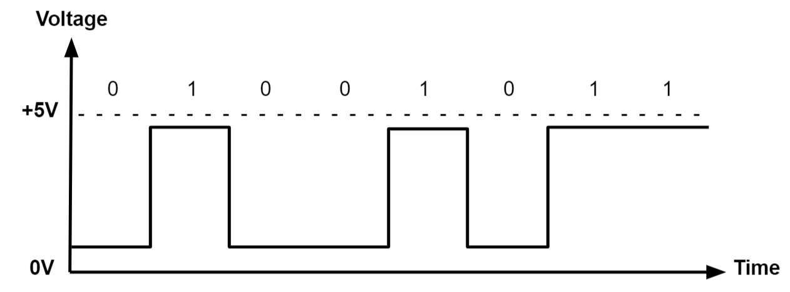

Hania
What I Want to Do After High School
After high school, I want to travel and explore the world. I am fascinated by how information travels across Computer Networks A group of interconnected computing devices capable of sending or receiving data. and how data, like analog data Values that change smoothly over time, such as the pitch and volume of a live concert., gets converted to digital forms.
Unit 1: Data Vocabulary
In computing, a bit A binary digit, either 0 or 1. is the smallest unit of data. Eight bits form a byte A sequence of 8 bits.. Sometimes, data compression can be lossless Compressing data in a way that preserves all data and allows full recovery of the original. or lossy Compressing data in a way that discards some data and makes it impossible to recover the original..
Unit 2: Computer Systems and Networks Vocabulary
The Internet Protocol (IP) Assigns unique IP addresses to devices and determines how data is routed between them. helps route packets Small chunks of data into which larger messages are divided for transmission. through routers along the fastest path The series of connections between computing devices on a network, starting with the sender and ending with the receiver.. This system is designed for fault tolerance A system’s ability to continue functioning even if individual components fail. and scalability The ability of a system to expand or contract to meet new demands..

Social Media Algorithms
Social media feeds are personalized using algorithms A set of rules a computer follows to solve problems or make decisions.. These algorithms look at what you like, comment on, and share — and then try to guess what you'll want to see next. It's like your feed is being custom-built for you in real time!
Fun Fact: TikTok’s algorithm tracks how long you watch a video — even if you don’t like or comment on it!

(Replace "social-algorithms.jpg" with your own image if needed!)